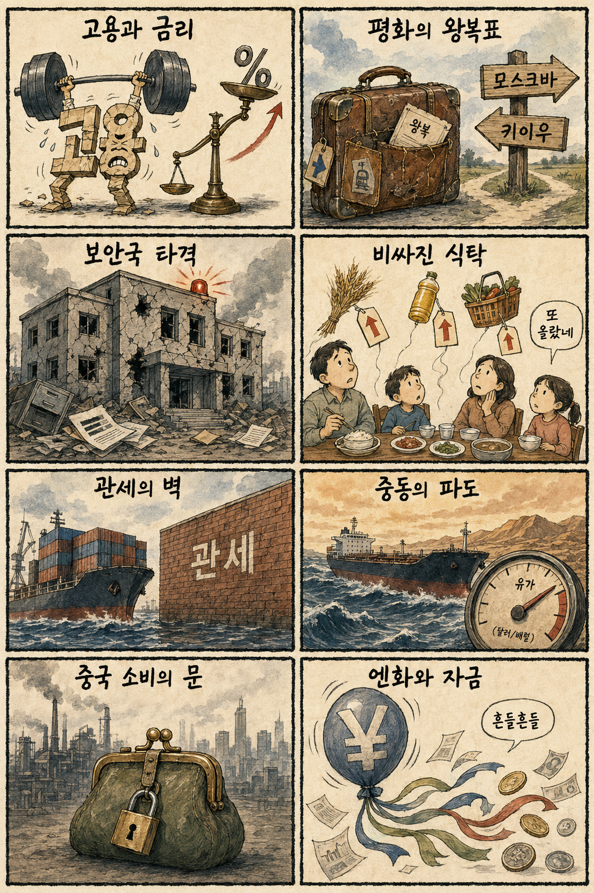
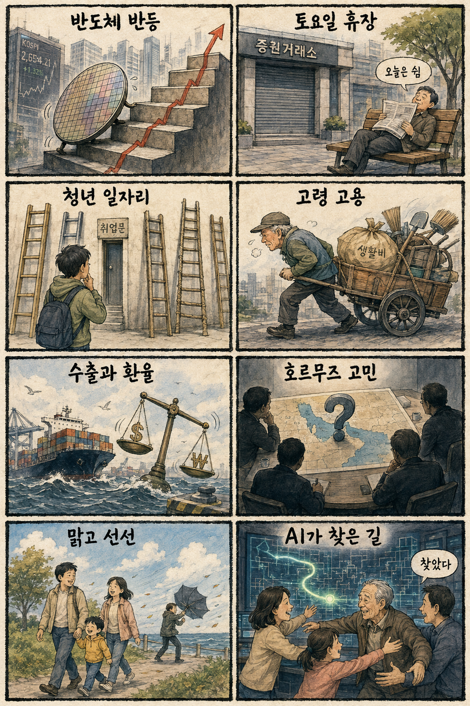

01
마벨 · 211.77→223.55달러 · +5.56%
내용요약 시가 대비 5.56% 상승해 반도체 종목 내 강한 상대 흐름을 보였습니다.
예상여파 국내 HBM·반도체 설계와 데이터센터 연결 종목의 심리를 지지할 수 있지만 휴장 뒤 갭 추격은 피해야 합니다.
MORNING_BRIEFING_20260905
작성 시각: 2026-09-05 06:39 KST · 직전 미국 정규장과 2026-09-05 KST 당일 공개 기사 기준
직전 미국 정규장인 9월 4일에는 예상보다 강한 고용 신호가 금리 인상 경계를 되살리며 다우 -0.51%, S&P 500 -0.38%, 나스닥 -0.29%로 하락했습니다. 반도체 안에서는 마벨 +5.56%, 마이크론 +4.69%, 인텔 +3.72%로 차별화가 나타났습니다. 오늘은 토요일로 한국 증시가 휴장하므로 즉시 매매보다 다음 거래일의 미국 물가·금리 기대와 반도체 수급을 준비하는 날입니다.
| 지수 | 종가 | 등락률 | 한국 증시 시사점 |
|---|---|---|---|
| 다우존스 | 53,414.25 | -0.51% | 경기·금리 경계 |
| S&P 500 | 7,718.60 | -0.38% | 성장주 변동성 경계 |
| 나스닥 종합 | 26,506.99 | -0.29% | 성장주 변동성 경계 |
고용 호조가 통화긴축 우려를 다시 키웠습니다.
마이크론·마벨·인텔은 지수 약세 속에도 올랐습니다.
9월 4일 반도체 반등으로 시가 대비 +0.49%를 기록했습니다.
오늘은 거래가 없고 검증 문턱을 충족한 후보도 없습니다.
9월 4일 보고서는 검증 문턱을 통과한 후보가 없어 공식 추천을 내지 않았습니다. 게시 당시 판단은 그대로 유지되며 사후 종목을 추가하지 않습니다.
| 시장 | 종가 | 등락률 | 기준 |
|---|---|---|---|
| KOSPI | 6,687.21 | +1.64% | 9월 4일 · 시가 대비 +0.49% |
| KOSDAQ | 813.50 | +2.95% | 9월 4일 · 시가 대비 +1.39% |
| 다우존스 | 53,414.25 | -0.51% | 미국 9월 4일 정규장 |
| S&P 500 | 7,718.60 | -0.38% | 미국 9월 4일 정규장 |
| 나스닥 종합 | 26,506.99 | -0.29% | 미국 9월 4일 정규장 |
마벨 +5.56%, 마이크론 +4.69%, 인텔 +3.72%로 시가 대비 상승했습니다.
슈퍼마이크로 +3.61%, AMD +3.37%로 견조했습니다.
애플 -2.54%, 테슬라 -2.24%, 마이크로소프트 -2.02%였습니다.
넷플릭스 -4.77%로 조사 종목 중 낙폭이 컸습니다.
내용요약 시가 대비 5.56% 상승해 반도체 종목 내 강한 상대 흐름을 보였습니다.
예상여파 국내 HBM·반도체 설계와 데이터센터 연결 종목의 심리를 지지할 수 있지만 휴장 뒤 갭 추격은 피해야 합니다.
내용요약 시가 대비 4.69% 오르며 메모리 업종의 강세를 이끌었습니다.
예상여파 삼성전자·SK하이닉스 투자심리에 긍정적 연결고리지만 미국 고용발 금리 부담과 함께 판단해야 합니다.
내용요약 시가 대비 3.72% 상승해 지수 하락장에서 상대 강세를 기록했습니다.
예상여파 미국 반도체 생산·정책 기대가 이어질 경우 국내 장비·소재주는 수혜와 경쟁 압력을 동시에 받을 수 있습니다.
내용요약 시가 대비 3.61% 올라 AI 서버 수요 기대가 유지됐습니다.
예상여파 데이터센터 전력·냉각·기판 수요 심리를 지지하지만 개별 기업 변동성이 높아 추격 위험이 큽니다.
내용요약 시가 대비 4.77% 하락해 대형 성장주 가운데 뚜렷한 약세였습니다.
예상여파 금리 우려가 커질 때 장기 성장 기대에 의존하는 고평가 플랫폼주의 할인율 부담이 확대될 수 있습니다.
오늘은 토요일로 한국 증시가 휴장합니다. 다음 거래일에는 미국 지수 하락과 금리 경계가 상단을 누르겠지만 마이크론·마벨·인텔의 상대 강세와 9월 4일 KOSPI +1.64%, KOSDAQ +2.95% 반등이 완충재입니다. 주말 뉴스와 미국 물가 전망을 확인한 뒤 원화·외국인 선물, 삼성전자·SK하이닉스가 시초가를 지키는지 보고 대응합니다.
오늘은 추천 없음 — 현금 관망
토요일 휴장이고, 전일까지의 외국인·기관 수급, 컨센서스 변화, 30건 이상 유사 조건 확률 보정, 예상 손익비 1.5 이상을 동시에 검증한 국내 종목이 없습니다. 점수와 확률을 임의로 만들지 않습니다.
관심 연결종목 메모리·AI 서버·반도체 장비는 다음 거래일 관찰 대상일 뿐 매수 추천이 아닙니다. 주말 호재로 장전 급등하거나 과도한 갭이 발생하면 추격매수 금지입니다.
주말 뉴스로 주문 판단을 서두르지 않고 다음 거래일 시초가를 기다립니다.
강한 고용 뒤 CPI·PPI 예상치가 금리 경로를 다시 움직이는지 봅니다.
메모리·서버주의 강세가 주말 이후에도 이어지는지 확인합니다.
러·우 전황과 식량가격 상승이 유가·환율·물가 기대를 자극하는지 점검합니다.
핵심 요약: AI 경쟁은 칩 성능뿐 아니라 에이전트 소비자 보호, 산업별 모델 재조립, 일정 실행형 서비스, 차세대 보안 체계로 확장되고 있습니다. 중국 자체 칩의 성능 격차와 서비스 신뢰를 함께 봐야 합니다.
내용요약 화웨이 AI 칩의 2026년 예상 연산량이 엔비디아의 4% 수준이라는 업계 전망을 전한 당일 보도입니다. 중국의 자체 칩 확대에도 성능·생태계 격차가 여전히 크다는 진단입니다.
예상여파 대중 수출통제와 중국 내 대체 공급망 투자가 함께 이어져 AI 칩·HBM·패키징 시장의 지역 분절이 심해질 수 있습니다.
내용요약 자율적으로 구매·예약까지 수행하는 AI 에이전트 시대에 설명의무, 오류 책임, 취소·환불 같은 소비자 보호 기준이 필요하다는 법률신문 기고입니다.
예상여파 에이전트 상거래가 커질수록 플랫폼과 판매자의 책임 범위, 데이터 사용 동의, 피해 구제 절차가 서비스 확산 속도를 좌우할 전망입니다.
내용요약 제주대가 생성형 AI 모델을 기능 단위로 분해하고 재조립하는 원천기술 개발에 나서며 최대 110억원 지원을 받는다는 보도입니다.
예상여파 범용 모델을 산업별로 가볍게 조합하는 기술이 발전하면 구축비와 전력 사용을 낮추고 지역 대학·기업의 특화 AI 진입을 도울 수 있습니다.
내용요약 일정을 일일이 묻지 않고 모임 시간을 조율하는 AI 기반 앱이 벤처 업계의 관심을 받고 있다는 당일 보도입니다.
예상여파 생성형 AI의 경쟁이 대화형 검색에서 캘린더·예약 등 일상 업무 실행으로 이동하며 개인정보와 외부 서비스 연동 품질이 중요해집니다.
내용요약 AI 에이전트 확산과 양자컴퓨팅 위협이 기업 사이버 보안 체계를 바꾸고 있다는 당일 분석입니다.
예상여파 자율 에이전트의 권한 오남용과 장기 암호 위협에 대비해 최소권한, 행위 감사, 양자내성암호 전환 계획을 서둘러야 합니다.
핵심 요약: 러시아·우크라이나 사이에서 협상 접촉과 직접 타격이 동시에 진행되고, 세계 식량가격은 2022년 말 이후 최고로 올랐습니다. 미국의 강한 무역 발언과 중국 내수 부진도 공급망과 물가의 불확실성을 키웁니다.
내용요약 미국 특사단이 이번 주말 러시아와 우크라이나를 방문해 평화협상 중재에 나선다는 당일 보도입니다.
예상여파 접촉이 휴전 논의의 통로를 넓힐 수 있지만 전장 공세가 병행돼 에너지·곡물 시장의 지정학적 위험 프리미엄은 쉽게 사라지지 않을 수 있습니다.
내용요약 러시아가 우크라이나 정보기관 본부를 처음 직접 타격했다는 뉴시스 당일 보도입니다.
예상여파 정보기관을 겨냥한 보복전이 확대되면 수도권 기반시설과 사이버 공간의 충돌 위험이 커지고 협상 분위기도 훼손될 수 있습니다.
내용요약 유엔 식량농업기구의 세계 식량가격 지수가 두 달 연속 올라 2022년 11월 이후 최고 수준을 기록했다는 연합뉴스 보도입니다.
예상여파 곡물·유지류 가격 상승이 저소득국 식량안보와 각국 소비자물가를 압박해 금리 인하 여력을 제약할 수 있습니다.
내용요약 미국 대통령이 금리 인하를 압박하며 한국·중국과의 무역 중단 가능성까지 거론했다는 당일 보도입니다.
예상여파 강한 무역 발언이 현실 정책으로 이어질 경우 반도체·자동차·소비재 공급망과 원화 변동성이 크게 흔들릴 수 있습니다.
내용요약 중국 경제의 핵심 제약이 미국보다 부진한 내수와 소비 심리라는 한국일보 당일 칼럼입니다.
예상여파 중국의 소비 회복이 지연되면 한국의 화학·소비재·기계 수출이 압박받고 추가 경기부양 기대는 커질 수 있습니다.

핵심 요약: 주말 휴장 뒤 국내 증시는 반도체 수급과 미국 물가를 함께 확인해야 합니다. 청년·고령 고용의 질, 호르무즈 해협 대응, 선선한 주말 날씨가 경제·사회·생활의 주요 축입니다.
내용요약 다음 주 코스피가 반도체 반등을 이어갈지 미국 물가 지표와 동시만기가 변수라는 주간 증시 전망입니다.
예상여파 이번 주말 휴장 뒤에는 미국 금리 기대와 대형 반도체 수급이 함께 움직일 가능성이 커 갭 상승 추격보다 시초가 안착 확인이 중요합니다.
내용요약 정부 청년 고용 대책이 숫자 확대를 넘어 지속 가능한 일자리와 직무 전환을 만들어야 한다는 당일 정책 분석입니다.
예상여파 단기 인턴 중심 대책에 머물면 체감 고용 개선이 제한되므로 AI 전환 직무 교육과 중소기업 근속 유인이 성과를 좌우할 수 있습니다.
내용요약 고령층 취업자가 1천만명을 넘었지만 생계형·저임금 일자리 비중이 높다는 당일 보도입니다.
예상여파 노후소득 부족과 고용 질 문제가 이어지면 세대 간 일자리 갈등과 복지 재정 부담이 동시에 커질 수 있습니다.
내용요약 한국 정부가 호르무즈 해협 파병 가능성을 검토하고 있으나 아직 결정된 사안은 아니라는 고위 당국자 설명을 전한 보도입니다.
예상여파 해상 안전과 에너지 수송 보호 필요성이 커지는 한편 군사·외교적 부담도 있어 최종 결정과 국제 공조 범위를 지켜봐야 합니다.
내용요약 전국 대부분이 맑고 선선하되 전라·제주서부의 체감온도는 31도 안팎이며 제주와 해안에는 강풍이 예상된다는 당일 예보입니다.
예상여파 주말 야외활동은 대체로 무난하지만 제주·해안 이동은 강풍과 일부 비에 대비하고 큰 일교차에 건강 관리를 해야 합니다.
